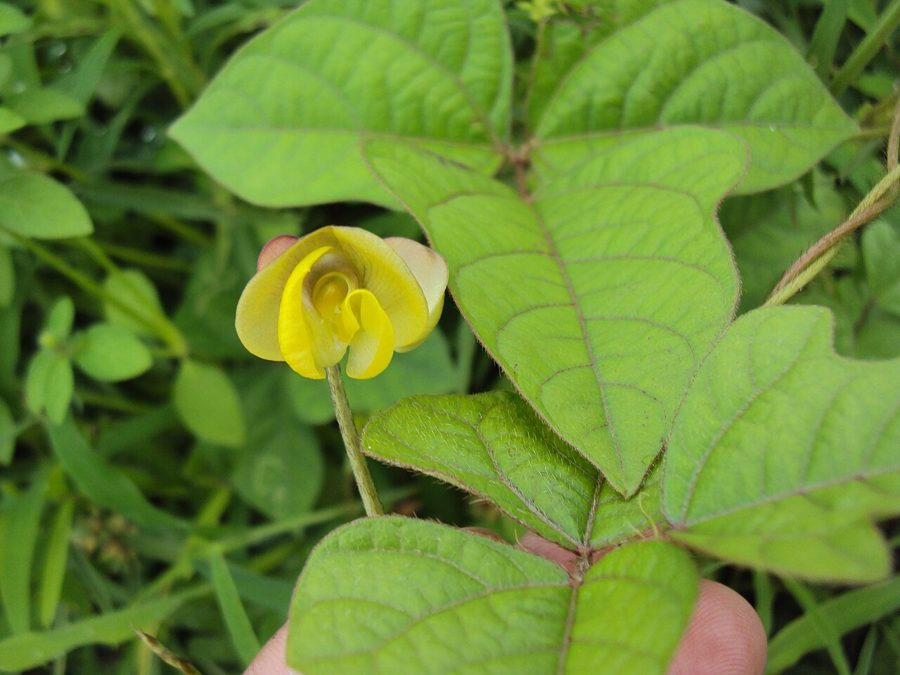

जंगल मैट बीनJungle Mat Bean
Vigna trilobata · Fabaceae · FLR-0382

- Scientific name वैज्ञानिक नाम
- Vigna trilobata (L.) Verdc.
- Family कुल
- Fabaceae
- Hindi हिंदी
- जंगल मैट बीन
- Local names स्थानीय नाम
- jungle mat bean
- Status here यहाँ की स्थिति
- native
- Movement आवागमन
- Resident, here all year
- Known from कहाँ दर्ज
- Others have published records from the Basti–Ayodhya districts बस्ती–अयोध्या के ज़िलों से दूसरों के प्रकाशित अभिलेख
- IUCN IUCN
- not evaluated
- Review समीक्षा
- not yet reviewed
When to look कब देखें
Expected mainly in July, August, September, October, November, December, January. मुख्यतः जुलाई, अगस्त, सितंबर, अक्टूबर, नवंबर, दिसंबर, जनवरी में अपेक्षित।
Uses and possibilities उपयोग और संभावनाएँ
Drawn from the documented uses in the profile below, where each is labelled traditional, current or a research lead. All uses →
जंगल मैट बीन / Jungle Mat Bean
Vigna trilobata (L.) Verdc. — Fabaceae
जंगल मैट बीन — अवध के चरागाहों, परती खेतों और नहरों की पटरियों पर जमीन पर जाल की तरह फैलने वाला एक देशी दलहनी पौधा है जिसके पत्तों में तीन गहरे खांचे (तीन पालियां) होते हैं। लंबी डंडियों पर चमकीले पीले रंग के छोटे तितली जैसे फूल खिलते हैं और बाद में पतली, सीधी, गोल फलियां लगती हैं जिनमें छोटे काले-भूरे बीज होते हैं। यह मवेशियों के लिए एक उत्तम चारा और जमीन को उपजाऊ बनाने वाली हरी खाद है।
Quick Identification त्वरित पहचान
| Feature | Description |
|---|---|
| Habit | Trailing, prostrate or climbing herbaceous legume forming dense spreading mats |
| Leaves | Trifoliolate; leaflets deeply and characteristically three-lobed with rounded segments |
| Flowers | Small, bright yellow, papilionaceous, crowded onto long erect axillary peduncles |
| Pods | Slender, cylindrical, straight or slightly recurved, glabrous to sparsely pubescent |
| Seeds | Small, oblong-cylindrical, smooth, dark greyish-brown or mottled with black |
Trailing wild legume readily recognized by its deeply three-lobed leaflets, erect flowering scapes bearing yellow butterfly flowers, and slender cylindrical straight pods.
Field tip: Look in open grassy pastures and canal banks for creeping vines with distinctly three-fingered leaflets and bright yellow pea blossoms.
हिंदी: तीन पालियों (खांचों) वाले पत्तों, जमीन पर फैलने वाली लताओं, पीले तितलीनुमा फूलों और पतली गोल फलियों से पहचानी जाने वाली जंगली दाल।
Morphology आकारिकी
| Feature | Description |
|---|---|
| Stems | Slender, prostrate, trailing or twining, glabrous or with few spreading hairs |
| Leaves | Alternate, trifoliolate; terminal leaflet deeply three-lobed with spathulate lobes |
| Stipules | Large, ovate-oblong, attached above the base (peltate), prominently nerved |
| Inflorescence | Few-flowered subcapitate racemes on long, rigid, erect axillary peduncles |
| Pods | Cylindrical, subglabrous, straight, containing multiple small oblong seeds |
| Measurement | Measurement not available in consulted open sources. |
A prostrate or trailing herb with branched wiry stems. The leaves are trifoliolate; the leaflets are deeply divided into three spathulate lobes with obtuse apices. The stipules are large and peltate. The yellow flowers are borne on long upright peduncles. The pods are linear, cylindrical, smooth or slightly hairy, enclosing small cylindrical seeds.
हिंदी: इसका तना जमीन पर रेंगता है। पत्ते तीन भागों में बंटे होते हैं और हर पत्ती में तीन गहरे खांचे होते हैं। फूल पीले और फलियां पतली गोल पेंसिलों जैसी होती हैं।
Behaviour & Ecology पारिस्थितिक भूमिका
A hardy trailing legume adapted to disturbed, sunlit tropical plains. It fixes substantial atmospheric nitrogen via root nodules, enriching poor sandy loam soils. The trailing stems root at nodes when touching moist earth, creating soil-binding mats that prevent erosion along canal slopes and riverbanks. The bright yellow flowers are visited by wild bees and butterflies. It serves as a food plant for Salt and Pepper Moth (Utetheisa lotrix).
हिंदी: यह जमीन पर फैलकर अपनी गांठों से नई जड़ें जमाती है जिससे मिट्टी का कटाव रुकता है। इसकी जड़ें मिट्टी में नाइट्रोजन जमा करती हैं और इसके फूलों पर तितलियां आती हैं।
Life Cycle / Phenology जीवन चक्र
Grows as a rapid monsoon annual or short-lived perennial. Germinates quickly following June and July rains. Stems elongate vigorously, forming spreading mats within a month. Flowering begins in August and continues through November. Pods mature and turn blackish-brown in autumn, dehiscing elastically to fling seeds several paces away.
हिंदी: बरसात शुरू होते ही इसके बीज उगते हैं और एक महीने में पौधा जमीन पर फैल जाता है। अगस्त से नवंबर तक फूल और फलियां आती हैं। फलियां सूखकर चटकती हैं और बीज दूर बिखर जाते हैं।
Associated Species / Interactions संबद्ध प्रजातियाँ और सहजीवन
Grows in natural association with pasture grasses and wild legumes on field bunds. It provides natural forage for grazing cattle and wild herbivores. It serves as an alternative wild food source for generalist legume pod borer caterpillars and foliage-feeding insects, while flowers attract solitary bees and butterflies.
हिंदी: यह चरागाहों में घासों के साथ उगती है और मवेशी इसे बहुत पसंद से खाते हैं। इसके फूलों पर मधुमक्खियां और तितलियां आकर्षित होती हैं।
Pests and Diseases कीट और रोग
Naturally hardy, though foliage can be infected by yellow mosaic virus transmitted by whiteflies (Bemisia tabaci) during hot humid weather. Leafhoppers occasionally suck sap from tender shoots.
हिंदी: यह एक सहनशील पौधा है, लेकिन कभी-कभी सफेद मक्खी के कारण इसमें पीला मोजेक रोग लग सकता है।
Agricultural / Human Relevance कृषि प्रासंगिकता
Highly valued in Indian dryland agriculture and pastoralism as a nutritious green fodder and cover crop. The entire herbage is rich in crude protein and readily consumed by cattle, goats, and sheep. In traditional subsistence farming, the seeds are gathered and cooked as dal during famine years. In soil management, it is ploughed into fields as high-quality green manure to boost organic matter and nitrogen before winter wheat sowing.
हिंदी: यह पशुओं के लिए एक अत्यंत पौष्टिक प्रोटीनयुक्त हरा चारा है। किसान इसे खेतों में हरी खाद के रूप में जोतकर मिट्टी की उर्वरा शक्ति बढ़ाते हैं। अकाल के समय इसके बीजों को दाल की तरह भी पकाया जाता रहा है।
Expected Locally स्थानीय रूप से अपेक्षित
Not a field record. Written from published accounts for eastern Uttar Pradesh. No confirmed local sighting yet — if you have seen it, that is what the atlas needs.
अभी तक स्थानीय पुष्टि नहीं। यह विवरण प्रकाशित स्रोतों से है, किसी अवलोकन से नहीं।
Common on grassy field bunds, fallow pulse lands, canal embankments, and unpaved rural tracks across the middle Gangetic plains. Observers in eastern Uttar Pradesh should check sunny pastures and bunds from August to November for trailing vines with three-lobed leaves and yellow pea flowers.
GBIF holds published records from these districts during the post-monsoon months.
A first local record for the atlas would be a clear photograph showing diagnostic features, accompanied by date, time, and precise location coordinates sent through the project's About page.
हिंदी: बस्ती और अयोध्या में खेतों की मेड़ों, नहर के किनारों और चरागाहों में यह जंगली दाल आसानी से मिल सकती है। तीन खांचेदार पत्तों और पीले फूलों की फोटो एटलस को भेजें।
Distribution वितरण
Global range: Native across South Asia, from India, Pakistan, and Sri Lanka to Myanmar, Malaysia, and Indonesia.
In India: Found across all states in peninsular, western, and northern agricultural plains.
In Uttar Pradesh: Distributed throughout the Gangetic plains in pastures and field margins.
In Basti district / eastern UP: Documented across rural grassland and fallow tracts based on regional floristic checklists.
हिंदी: यह भारत, पाकिस्तान, श्रीलंका और दक्षिण-पूर्व एशिया में पाई जाती है। उत्तर प्रदेश के सभी मैदानी जनपदों में इसका सामान्य फैलाव है।
Research Questions शोध प्रश्न
- What is the atmospheric nitrogen fixation capacity of Vigna trilobata per hectare in eastern Uttar Pradesh alluvium?
- How does the nutritional profile of jungle mat bean fodder compare to cultivated berseem and lucerne? / क्या इसका चारा बरसीम जितना पौष्टिक है?
- What is the genetic resistance of wild Vigna trilobata accessions to yellow mosaic virus compared to domestic mungbean?
- A schoolchild can count the three rounded lobes on each leaflet of this wild creeper / क्या कोई बच्चा इसके पत्तों के तीन खांचों को गिनकर इसे पहचान सकता है?
- How does cattle grazing intensity influence root nodulation and seed production in pasture margins?
हिंदी: क्या इस जंगली मूँग से दलहन की नई प्रतिरोधी किस्में बनाई जा सकती हैं? क्या बच्चे इसके तीन-खांचे वाले पत्तों को पहचान सकते हैं?
Similar Species मिलती-जुलती प्रजातियाँ
| Species | How to tell apart | हिंदी | |
|---|---|---|---|
| Green Gram \ | Vigna radiata | Erect cultivated pulse; leaflets entire and ovate, not deeply three-lobed; hairy pods | मूँग का पौधा सीधा खड़ा होता है, उसके पत्तों में तीन खांचे नहीं होते और फलियां रोएं वाली होती हैं |
| Cowpea \ | Vigna unguiculata | Twining or erect cultivated pulse; ovate-rhomboid unlobed leaflets; long pendant fleshy pods | लोबिया या बोड़ा के पत्ते बिना खांचे वाले होते हैं और फलियां बहुत लंबी व लटकती हुई होती हैं |
| Vigna aconitifolia (Moth Bean) \ | Vigna aconitifolia | Leaflets divided into very narrow, linear, finger-like segments; pods smaller | मोठ के पत्ते बहुत पतली उंगलियों जैसे कटे होते हैं, इसके पत्ते चौड़े तीन खांचे वाले होते हैं |
Field rule: Trailing wild legume with deeply three-lobed leaflets, long upright flower stalks with yellow pea flowers, and slender cylindrical straight pods.
हिंदी: तीन खांचों वाली पत्तियों, जमीन पर फैलने वाले तनों, पीले तितलीनुमा फूलों और पतली गोल फलियों वाली जंगली मूँग।
Taxonomy & Classification वर्गीकरण
Original description. Linnaeus (1767) in Mantissa Plantarum, p. 101; described under the basionym Dolichos trilobatus.
Subspecies. Monotypic species. Formerly treated by Baker (1876) and Duthie (1903) under the genus Phaseolus with epithet trilobus.
Family and order placement. Belongs to the legume family Fabaceae (subfamily Faboideae, tribe Phaseoleae), order Fabales, class Magnoliopsida.
Phylogenetic notes. Transferred to the genus Vigna Savi by Bernard Verdcourt (1968, Taxon 17(2): 170–173).
IUCN status rationale. Not currently evaluated on the IUCN Red List of Threatened Species.
हिंदी: इसे 1767 में लिनिअस ने Dolichos trilobatus नाम से वर्णित किया था। 1968 में बर्नार्ड वर्डकोर्ट ने इसे Vigna trilobata में स्थानांतरित किया। पुराने वनस्पति साहित्य में इसे Phaseolus trilobus भी लिखा गया है।
Photo Gallery फोटो गैलरी
No photos yet — add field photos to media/species/jungle_mat_bean/ and run node scripts/sync_photos.js.
Photos needed आवश्यक फोटो
- [ ] Trailing leafy vine showing deeply three-lobed leaflets (तीन खांचेदार पत्तियों वाली जमीन पर फैली लता)
- [ ] Inflorescence stalk with open yellow pea flowers (लंबे डंठल पर खिले पीले तितलीनुमा फूल)
- [ ] Slender cylindrical pods maturing on vine (पौधे पर लगी पतली गोल फलियां)
References संदर्भ
- Original description: Linnaeus, C. (1767). Mantissa Plantarum. Laurentii Salvii, Holmiae, p. 101. (as Dolichos trilobatus).
- Verdcourt, B. (1968). The Identities of Dolichos trilobus L. and Dolichos trilobatus L. Taxon, 17(2), 170–173.
- Baker, J. G. (1876). Leguminosae. In J. D. Hooker, The Flora of British India, Vol. 2. L. Reeve & Co., London, p. 201. (as Phaseolus trilobus).
- Duthie, J. F. (1903). Flora of the Upper Gangetic Plain, and of the Adjacent Siwalik and Sub-Himalayan Tracts. Vol. 1. Superintendent of Government Printing, Calcutta, p. 224. (as Phaseolus trilobus).
- GBIF Occurrence Data — Vigna trilobata, India (2025).
Source file: species/flora/weeds/jungle_mat_bean.md